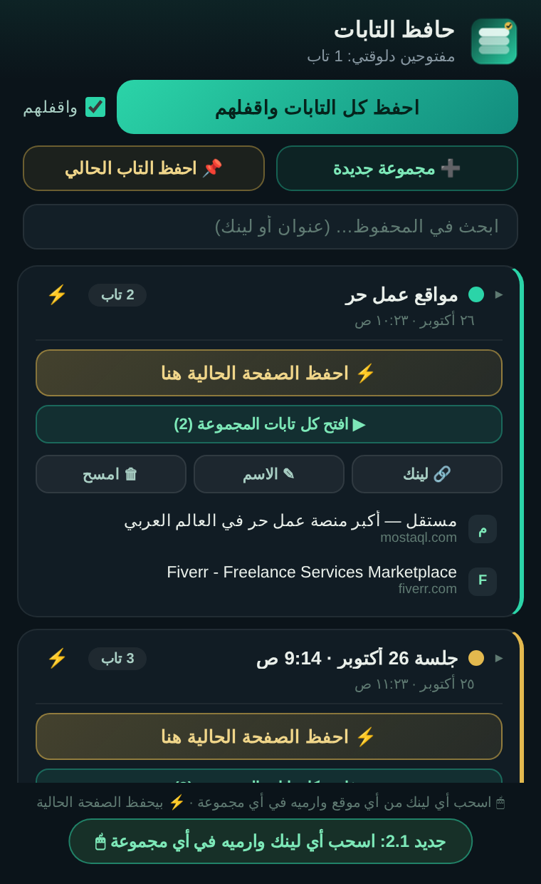

⬇ حمّل الكستنشن (ZIP)
فك الضغط بعد التحميل — وهتلاقي جواه ورقة تعليمات كاملة بالعربي

التركيب — دقيقتين ومرة واحدة
- فك ضغط الملف — هيطلعلك فولدر اسمه tab-keeper
- لو النسخة القديمة مركّبة عندك: افتح chrome://extensions ودوس زرار التحديث في كارت الكستنشن — خلص ✅
- افتح كروم واكتب في العنوان: chrome://extensions واضغط Enter
- شغّل زرار Developer mode (فوق في الصفحة)
- دوس Load unpacked واختار فولدر tab-keeper
- دوس أيقونة الدبوس اللي جنب الكستنشن عشان يفضل ظاهر دايمًا ✅
جديد النسخة 2.2 ✨
- ⚡ «احفظ الصفحة الحالية هنا» جوه كل مجموعة — زرار كبير واضح: دوسة واحدة والصفحة اللي انت فيها تتسجل في المجموعة دي على طول (ولو المجموعة مقفولة، ⚡ موجود في الهيدر)
- تصميم أريح وأوضح — الهيدر نضيف، والأدوات بأسماء مفهومة: 🔗 لينك · ✎ الاسم · 🗑 امسح
- اتشال زرار + القديم اللي كان بيجلب كل التابات وبيشوّش
جديد النسخة 2.1 🖱
- سحب وإفلات اللينكات — اسحب أي لينك من أي موقع وارميه على أي مجموعة يتحفظ فورًا — المجموعة بتنوّر وتقول «افلت هنا»
- نقل التابات بين المجموعات — امسك أي تاب محفوظ واسحبه لمجموعة تانية يتنقل بيها
- ⚡ حفظ فوري لكل مجموعة — دوس مرة واحدة والصفحة اللي انت فيها تتسجل فيها على طول من غير أي سؤال
جديد النسخة 2.0
- لوحة على جنب الشاشة — أيقونة الكستنشن بتفتحه Panel ثابت ويفضل مفتوح وإنت بتتصفح
- ألوان للمجموعات — كل مجموعة ليها لونها، دوس على النقطة تغيّره
- صنّف بنفسك — «➕ مجموعة جديدة» واكتب اسمها، و«🔗» تضيف أي لينك بنفسك
- 📌 احفظ التاب الحالي — تختار هو ينزل في أنهي مجموعة
بتستخدمه إزاي؟
- احفظ كل التابات واقفلهم — كل تاباتك تتحفظ في جلسة وتتقفل، والمتصفح يبقى نضيف
- افتح الكل — يرجّع كل تابات الجلسة مرة واحدة في أي وقت
- دوس على أي تاب جوه المجموعة يفتح لوحده
- ⚡ احفظ الصفحة الحالية هنا — زرار جوه كل مجموعة يسجّل الصفحة اللي انت فيها فيها فورًا
- 🔗 لينك تضيف أي لينك بنفسك · ✎ الاسم يغيّر الاسم · 🗑 امسح يمسح المجموعة
- البحث فوق — دوّر على أي حاجة محفوظة بالاسم أو اللينك
🔒 كل حاجة بتتخزن على جهازك انت بس — مفيش أي بيانات بتتبعت لأي حد، حتى لو قفلت كروم وفتحته المحفوظ زي ما هو.